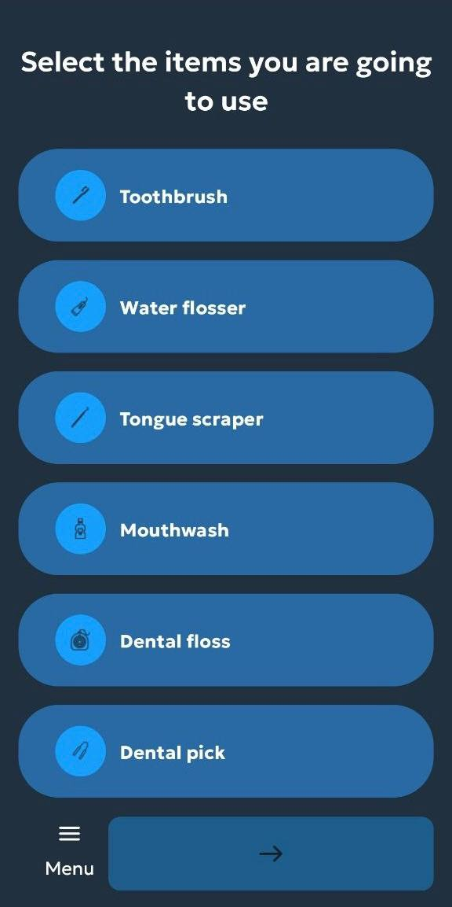
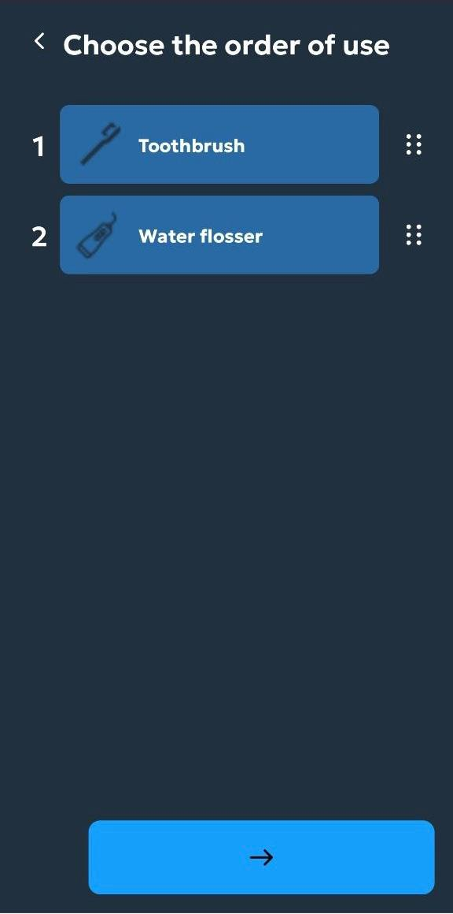
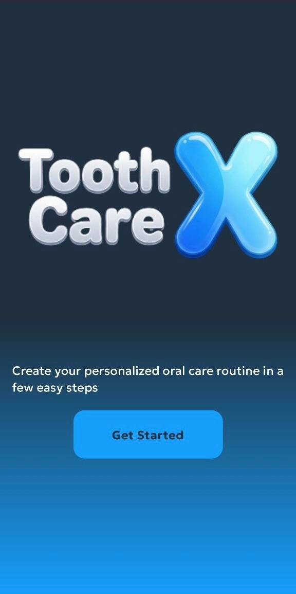
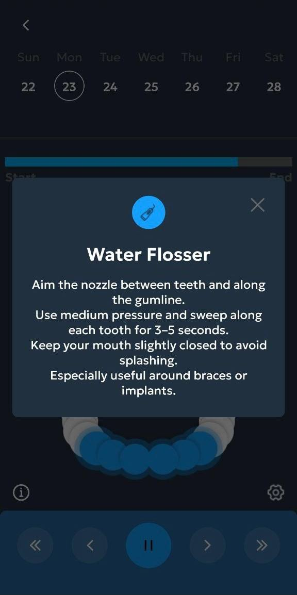
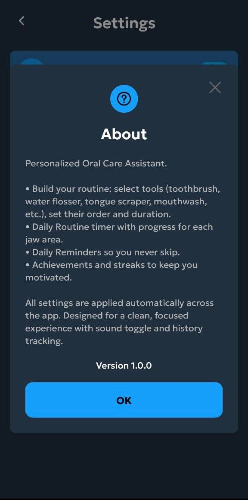
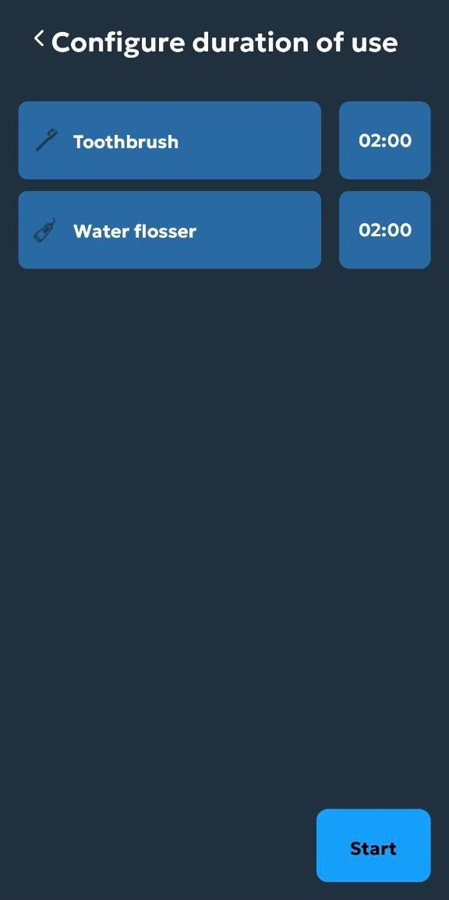
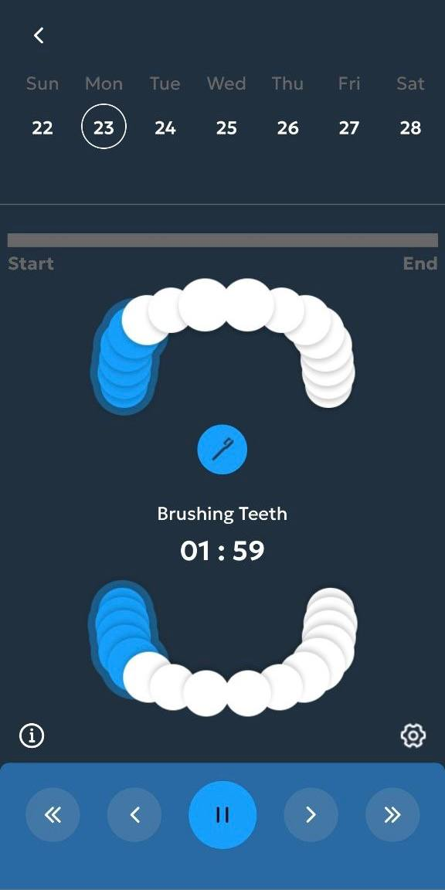
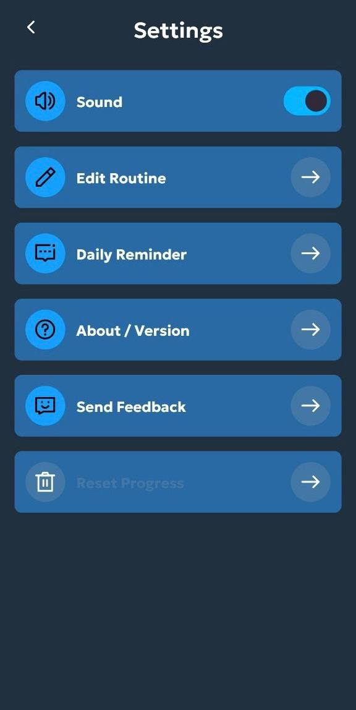

Dental routine app
Clean · Guided · Consistent
Build a better oral care routine with one guided mobile flow
Tooth World helps users choose their tools, define the order of use, configure duration, follow a guided brushing timer, and stay consistent through reminders, settings, and progress-friendly routine structure.

Start by selecting the products and devices you actually use.


Oral care, structured
From setup to timer to reminders in one connected
routine.

Use a visual timer with progress guidance for different areas.

Tooth World turns oral care from a vague habit into a guided sequence you can actually follow every day
What the app helps users do
Select tools
Build a routine using toothbrush, water flosser, tongue scraper, mouthwash, floss, and other tools.
Choose order of use
Arrange tools in the sequence that matches your preferred oral care process.
Set duration
Assign time blocks to each item so the routine becomes practical and repeatable.
Follow the timer
Use a guided brushing experience with progress around each jaw area and tool step.
Open contextual guidance
Get short instructions for tools like the water flosser without leaving the routine flow.
Adjust settings and reminders
Manage sound, reminders, feedback, and routine editing from one control area.
Routine flow
From setup to guided care
Onboarding
Users enter through a clear start screen with a direct routine-focused message.
Tool selection
The routine becomes personalized from the first interaction.
Order setup
The care flow becomes more intentional and easier to repeat.
Time planning
Duration control turns a tool list into a real sequence.
Active guidance
The app supports the user while the routine is actually happening.
Tool help
Instruction popups keep the experience practical and educational.
Settings control
Users can refine the app around their own preferences.
About the product
The app clearly communicates what it does and how it supports daily consistency.
Current screen
Start with a clean onboarding screen
The app opens with a simple branded entry that frames Tooth World as a personalized oral care assistant.
App showcase



Why the app feels useful
★★★★★
“It takes oral care from random actions into a structured routine that actually feels easier to follow.”
Emma R.
Daily care user
★★★★★
“The order and duration screens make a huge difference because they turn setup into a clear process.”
Chris T.
Routine builder
★★★★★
“The timer and tool tips make the app feel more practical than just a reminder list.”
Olivia M.
Health app user
Download app
Use Tooth World to build a stronger oral care routine
Personalize your tools, set the right order, configure timing, follow a guided timer, and manage reminders through one clean dental routine app.